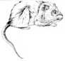
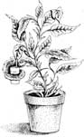
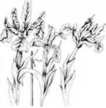
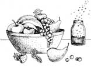

COUNTRY LORE
After having a mouse drag a trap right into its hole, we found the thought of rodents dying inside our walls to be unappealing, to say the least. Our preventive measure was to nail the mousetrap to a board (use large-headed nails placed around the perimeter of the base, rather than through it, to keep the trap from splitting). Added benefits are that it's easy to hold onto the board while setting or emptying the trap, our hands are less likely to get stung if the trap is sprung accidentally, and, by using a long, thin board, we can place the trap in hard-to-reach areas where the mice prefer to roam.
-Tom and Susan Dinkledine
Russiaville, Indiana
We use mothballs to keep mice and rats at a distance. In the house we place one or two pellets in each box of stored clothing, papers and books, and we tuck several into the insulation on the backs of appliances. We also use the aromatic pellets to protect bags of seed in the barn. We just cut a tiny hole in each bag, stuff a mothball in and tape over the hole. Sacks of animal feed can be protected, too, but place the repellent outside the bags, as otherwise the feed would be contaminated. Mothballs are effective for three months when enclosed and for about a month in the open, so we're protected year-round for about the cost of one mousetrap.
- Terry Waldrop
Goodspring, Tennessee
Happy Hour in the Greenhouse
I mix cocktails for my houseplants. First I add an envelope of unflavored gelatin and a teaspoon of instant coffee to a cup of very hot water. Then I add one-half teaspoon of dish detergent and a full ounce of whiskey. I pour this into a gallon jug and fill to the top with cool water. Used every so often, this tonic seems to provide a real "pick-me-up" for my plants.
-Jack Mathews
New Port Richey, Florida
Flag It
When I subdivided some heavily wooded land, I found it almost impossible to keep track of the marker pins in the undergrowth foliage. Following an old-timer's advice, I planted a tuber of iris at each pin. It's the old-fashioned tough-through-any-winter kind of iris we used to call flags. It grew and multiplied, and I'll bet those pins will still be easy to find a hundred years from now.
- Lois E. Hoirup
Vavenby, British Columbia
I used an old home remedy to remove two warts. I cut a potato into wedges, and every day I'd stick a fresh wedge, covered with plastic wrap, in my pocket. Several times a day I gave the warts a quick rub with the raw potato. In two days the warts started to diminish, and in two weeks they were gone, never to return.
-Frank Shearer
Scottsdale, Arizona
Our carpet has been attacked by asphalt driveway sealer, spilled paint, animal mishaps and dropped food. Each time it's been restored. I simply squirt a little nonmentholated aerosol shaving cream on the spot or stain, brush it in with a toothbrush, let it dry completely and vacuum it off. This is easy and inexpensive, and it works.
- Mike Currie
Fortuna, California
Carry a plastic pint bottle of rubbing alcohol in your car or pickup. When used on tissues, paper toweling or a rag, it will remove road tar, tree sap, insect stains, tobacco-smoke tar, chewing gum and most other sticky substances from both the interior and exterior of your vehicle.
-R. Diller
Steele City, Nebraska
Fixed Food
Rather than buy special weighted bowls for our pets, we feed them outdoors from inexpensive tube-cake pans. Each pan is anchored by driving a stake into the ground through the center hole. Our pets can't tip these bowls over or carry them off, but it's easy for us to lift them off the stakes to clean them.
- Santa and Nancy Erwin
Charleston, West Virginia
Have you noticed whenever you put out a bowl of fruit, especially in the fall, that it's soon surrounded by a horde of fruit flies? I've solved this problem by placing a small amount of vinegar in a jar, adding a drop or two of dish detergent and setting the jar in the same room as the fruit. The vinegar attracts the tiny insects and they drown.
-Elia Redburn
West Plains, Missouri
Through the years we've all discovered a few practical, time-tested solutions to the frustrating little problems of everyday life. Send your own suggestions to Country Lore, Mother Earth News, P.O. Box 70, Hendersonville, NC 28793. A one year subscription - or extension of an existing subscription - will be sent to each contributor whose tip is printed. Please include your mailing label with your submission if you are a current subscriber.
|
 |
 |
 |
|
 |
|
|